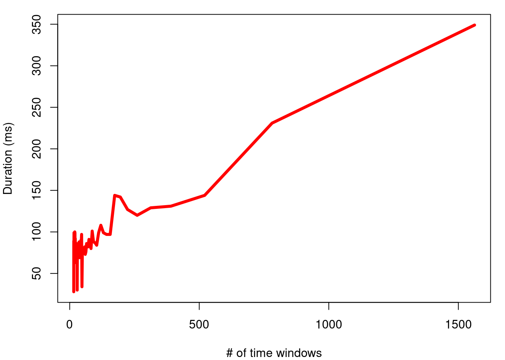
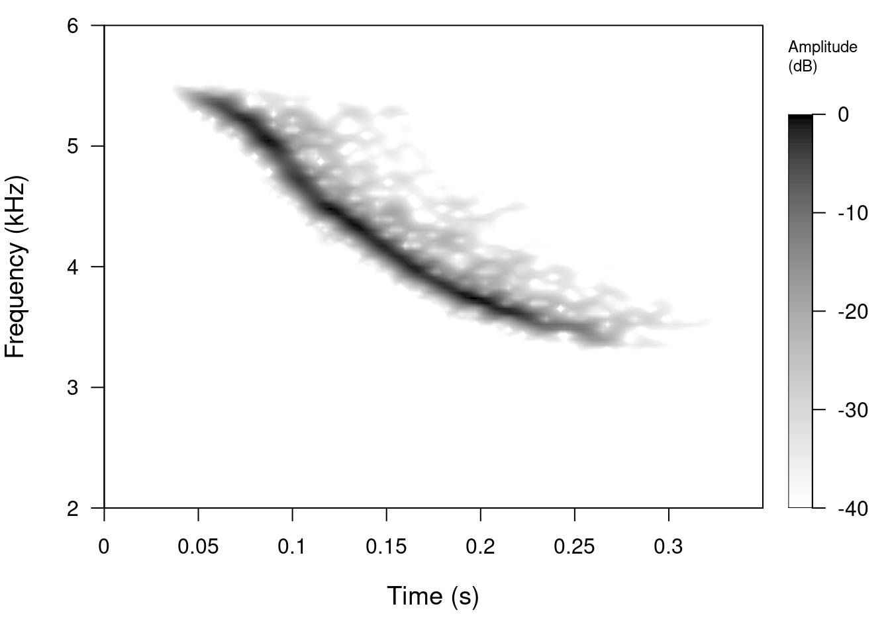
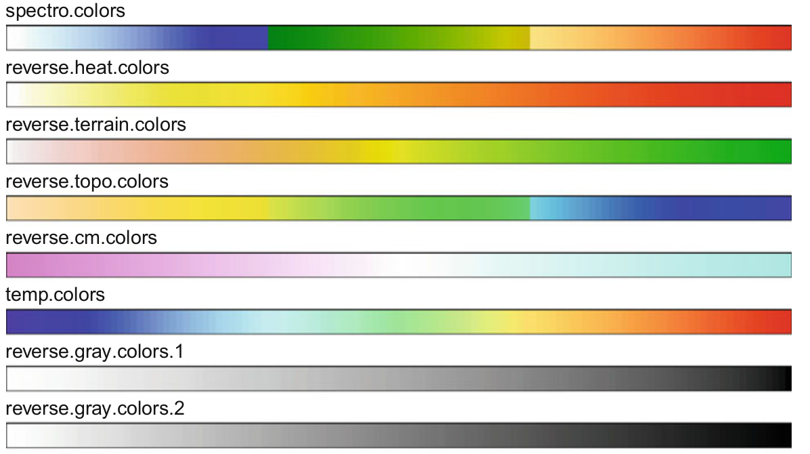

Code
library(seewave)
# load examples
data(tico)
data(orni)
Understand how spectrograms are created
Learn to create and customize spectrograms in R
The spectrogram is a fundamental tool in the study of acoustic communication in vertebrates. They are basically a visual representation of the sound where the variation in energy (or power spectral density) is shown on both the frequency and the time domains. Spectrograms allow us to visually explore acoustic variation in our study systems, which makes it easy to distinguish structural differences at small temporal/spectral scales that our ears cannot detect.
We will use the seewave package and its sample data:
library(seewave)
# load examples
data(tico)
data(orni)In order to understand the information contained in a spectrogram it is necessary to understand, at least briefly, the Fourier transformation. In simple words, this is a mathematical transformation that detects the periodicity in time series, identifying the different frequencies that compose them and their relative energy. Therefore it is said that it transforms the signals from the time domain to the frequency domain.
To better understand how it works, we can simulate time series composed of pre-defined frequencies. In this example we simulate 3 frequencies and join them in a single time series:
# freq
f <- 11025
# time sequence
t <- seq(1/f, 1, length.out = f)
# period
pr <- 1/440
w0 <- 2 * pi/pr
# frec 1
h1 <- 5 * cos(w0 * t)
plot(h1[1:75], type = "l", col = "blue", xlab = "Time (samples)", ylab = "Amplitude (no units)")
# frec 2
h2 <- 10 * cos(2 * w0 * t)
plot(h2[1:75], type = "l", col = "blue", xlab = "Time (samples)", ylab = "Amplitude (no units)")
# frec 3
h3 <- 15 * sin(3 * w0 * t)
plot(h3[1:75], type = "l", col = "blue", xlab = "Time (samples)", ylab = "Amplitude (no units)")
This is what the union of the three frequencies looks like:
H0 <- 0.5 + h1 + h2 + h3
plot(H0[1:75], type = "l", col = "blue", xlab = "Time (samples)", ylab = "Amplitude (no units)")
Now we can apply the Fourier transform to this time series and graph the frequencies detected using a periodogram:
fspc <- Mod(fft(H0))
plot(fspc, type = "h", col = "blue", xlab = "Frecuency (Hz)", ylab = "Amplitude (no units)")
abline(v = f/2, lty = 2)
text(x = (f/2) + 1650, y = 8000, "Nyquist Frequency")
We can make zoom in to frequencies below the Nyquist frequency:
plot(fspc[1:(length(fspc)/2)], type = "h", col = "blue", xlab = "Frecuency (Hz)",
ylab = "Amplitude (no units)")
This diagram (taken from Sueur 2018) summarizes the process we just simulated:
Tomado de Sueur 2018
The periodogram next to the spectrogram of these simulated sounds looks like this:

The spectrograms are constructed of the spectral decomposition of discrete time segments of amplitude values. Each segment (or window) of time is a column of spectral density values in a frequency range. Take for example this simple modulated sound, which goes up and down in frequency:
If we divide the sound into 10 segments and make periodograms for each of them we can see this pattern in the frequencies:

This animation shows in a very simple way the logic behind the spectrograms: if we calculate Fourier transforms for short segments of time through a sound (e.g. amplitude changes in time) and concatenate them, we can visualize the variation in frequencies over time.
When frequency spectra are combined to produce a spectrogram, the frequency and amplitude modulations are not gradual:
There are several “tricks” to smooth out the contours of signals with high modulation in a spectrogram, although the main and most common is window overlap. The overlap recycles a percentage of the amplitude samples of a window to calculate the next window. For example, the sound used as an example, with a window size of 512 points divides the sound into 15 segments:

A 50% overlap generates windows that share 50% of the amplitude values with the adjacent windows. This has the visual effect of making modulations much more gradual:
Which increases (in some way artificially) the number of time windows, without changing the resolution in frequency. In this example, the number of time windows is doubled:
Therefore, the greater the overlap the greater the smoothing of the contours of the sounds:

This increases the number of windows as a function of the overlap for this particular sound:

This increase in spectrogram sharpness does not come without a cost. The longer the time windows, the greater the number of Fourier transformations to compute, and therefore, the greater the duration of the process. This graphic shows the increase in duration as a function of the number of windows on my computer:

It is necessary to take this cost into account when producing spectrograms of long sound files (> 1 min).
However, there is a trade-off between the resolution between the 2 domains: the higher the frequency resolution, the lower the resolution in time. The following animation shows, for the sound of the previous example, how the resolution in frequency decreases as the resolution in time increases:

This is the relationship between frequency resolution and time resolution for the example signal:

There are several R packages with functions that produce spectrograms in the graphical device. This chart (taken from Sueur 2018) summarizes the functions and their arguments: 
We will focus on making spectrograms using the spectro () function of seewave:
tico2 <- cutw(tico, from = 0.55, to = 0.9, output = "Wave")
spectro(tico2, f = 22050, wl = 512, ovlp = 90, collevels = seq(-40, 0, 0.5), flim = c(2,
6), scale = FALSE)
Exercise
How can I increase the overlap between time windows?
How much longer it takes to create a 99%-overlap spectrogram compare to a 5%-overlap spectrogram?
What does the argument ‘collevels’ do? Increase the range and look at the spectrogram.
What do the ‘flim’ and ‘tlim’ arguments determine?
Run the examples that come in the spectro() function documentation
Almost all components of a spectrogram in seewave can be modified. We can add scales:
spectro(tico2, f = 22050, wl = 512, ovlp = 90, collevels = seq(-40, 0, 0.5), flim = c(2,
6), scale = TRUE)
Change the color palette:
spectro(tico2, f = 22050, wl = 512, ovlp = 90, collevels = seq(-40, 0, 0.5), flim = c(2,
6), scale = TRUE, palette = reverse.cm.colors)
spectro(tico2, f = 22050, wl = 512, ovlp = 90, collevels = seq(-40, 0, 0.5), flim = c(2,
6), scale = TRUE, palette = reverse.gray.colors.1)
Remove the vertical lines:
spectro(tico2, f = 22050, wl = 512, ovlp = 90, collevels = seq(-40, 0, 0.5), flim = c(2,
6), scale = TRUE, palette = reverse.gray.colors.1, grid = FALSE)
Add oscillograms (waveforms):
spectro(tico2, f = 22050, wl = 512, ovlp = 90, collevels = seq(-40, 0, 0.5), flim = c(2,
6), scale = TRUE, palette = reverse.gray.colors.1, grid = FALSE, osc = TRUE)
Exercise
Change the color of the oscillogram to red
These are some of the color palettes that fit well the gradients in spectrograms:

From Sueur 2018
Use at least 3 palettes to generate the “tico2” spectrogram
Change the relative height of the oscillogram so that it corresponds to 1/3 of the height of the spectrogram
Change the relative width of the amplitude scale so that it corresponds to 1/8 of the spectrogram width
What does the “zp” argument do? (hint: try zp = 100 and notice the effect on the spectrogram)
Which value of “wl” (window size) generates smoother spectrograms for the example “orni” object?
The package viridis provides some color palettes that are better perceived by people with forms of color blindness and/or color vision deficiency. Install the package and try some of the color palettes available (try ?viridis)
The package dynaSpec allows to create static and dynamic visualizations of sounds, ready for publication or presentation. These dynamic spectrograms are produced natively with base graphics, and are save as an .mp4 video in the working directory:
ngh_wren <- read_sound_file("https://www.xeno-canto.org/518334/download")
custom_pal <- colorRampPalette(c("#2d2d86", "#2d2d86", reverse.terrain.colors(10)[5:10]))
library(dynaSpec)
scrolling_spectro(wave = ngh_wren, wl = 600, t.display = 3, ovlp = 95, pal = custom_pal,
grid = FALSE, flim = c(2, 8), width = 700, height = 250, res = 100, collevels = seq(-40,
0, 5), file.name = "../nightingale_wren.mp4", colbg = "#2d2d86", lcol = "#FFFFFFE6")
Araya-Salas, Marcelo and Wilkins, Matthew R. (2020), dynaSpec: dynamic spectrogram visualizations in R. R package version 1.0.0.
Sueur J, Aubin T, Simonis C. 2008. Equipment review: seewave, a free modular tool for sound analysis and synthesis. Bioacoustics 18(2):213–226.
Sueur, J. (2018). Sound Analysis and Synthesis with R.
Session information
R version 4.3.2 (2023-10-31)
Platform: x86_64-pc-linux-gnu (64-bit)
Running under: Ubuntu 22.04.2 LTS
Matrix products: default
BLAS: /usr/lib/x86_64-linux-gnu/blas/libblas.so.3.10.0
LAPACK: /usr/lib/x86_64-linux-gnu/lapack/liblapack.so.3.10.0
locale:
[1] LC_CTYPE=en_US.UTF-8 LC_NUMERIC=C
[3] LC_TIME=en_US.UTF-8 LC_COLLATE=en_US.UTF-8
[5] LC_MONETARY=en_US.UTF-8 LC_MESSAGES=en_US.UTF-8
[7] LC_PAPER=en_US.UTF-8 LC_NAME=C
[9] LC_ADDRESS=C LC_TELEPHONE=C
[11] LC_MEASUREMENT=en_US.UTF-8 LC_IDENTIFICATION=C
time zone: America/Costa_Rica
tzcode source: system (glibc)
attached base packages:
[1] stats graphics grDevices utils datasets methods base
other attached packages:
[1] seewave_2.2.3 knitr_1.46
loaded via a namespace (and not attached):
[1] digest_0.6.35 signal_1.8-0 fastmap_1.1.1 xfun_0.43
[5] monitoR_1.0.7 htmltools_0.5.8.1 rmarkdown_2.26 tuneR_1.4.6
[9] cli_3.6.2 compiler_4.3.2 rstudioapi_0.15.0 tools_4.3.2
[13] evaluate_0.23 yaml_2.3.8 formatR_1.14 rlang_1.1.3
[17] jsonlite_1.8.8 htmlwidgets_1.6.4 MASS_7.3-55